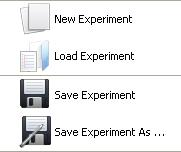
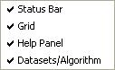
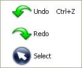
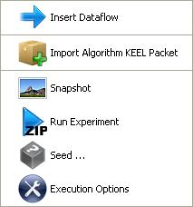
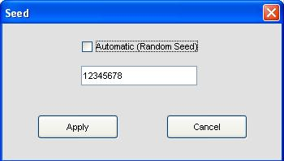
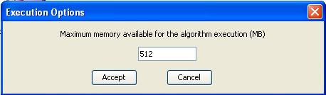
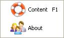

Each item of the menu bar contains different submenus. These are the different options available:
- File Menu

- New Experiment: creates a new experiment.
- Load Experiment: opens an existing experiment. In the open dialog box, select a filename, and click Open. Experiments files usually are saved in XML format.
- Save Experiment: saves the current experiment to a XML file. If it is the first time that the experiment is saved, you will be asked about destination path.
- Save Experiment As: saves current experiment to a XML file. You will be asked about destination path.
- Exit: closes the experiment design tool. If the experiment has not been saved yet, you can do it at this moment.
- View Menu

- Status Bar: shows/hides the status bar (at the bottom of the windows). Initially, it is active.
- Grid: shows/hides the alignment grid. It helps the user to make easy the alignment of the elements inserted in the draw area. Initially, it is inactive.
- Help Panel: shows/hides the help panel. Initially, it is active.
- DataSets/Algorithm: shows/hides the panel containing the datasets/algorithms. Initially, it is active.
- Edit Menu

- Undo: with this option the user can undo some actions.
- Redo: with this option user can redo some undone actions.
- Select: allows users to select one or more elements in the draw area.
- Tools Menu

- Insert Dataflow: allows connecting algorithm outputs (or dataset) to the inputs of another algorithm, creating a data flow that will be run later. This option is also available from the left bar via the button .
- Import algorithm KEEL packet: in order to insert a user's method, select this option and explore the path to choose the method.
- Snapshot: it is possible to save the experiment design into an image format file (JPEG). This way allows you to insert it in any document, article, etc...
- Run Experiment: when experiment is fully designed, use this option to create a ZIP file containing a directory structure with all the files needed to run the designed experiment in the local computer selected by the user.
- Seed: sets up the value of the seed used by the random number generator. If there is any algorithm (inserted in the experiment) that needs to generate random numbers, it will take in a seed created from the initial seed value. This seed can be established automatically or you can insert a value manually. The following picture shows the dialog prompted by this option:

- Execution Options: allows selecting some performance options to apply to the experiment. In this version, the option defined is the following:
- Java Heap Size: Indicate the number of MB that will be allocated in each execution of the algorithm. Default value is 512MB. Please do not set a higher value than your actual amount of RAM. The minimum accepted value has been set to 32MB.

- Help Menu

- Content: show a help dialog that contains information about how to use this program.
- About: shows a dialog with basic information about the program as name, authors, version, etc...